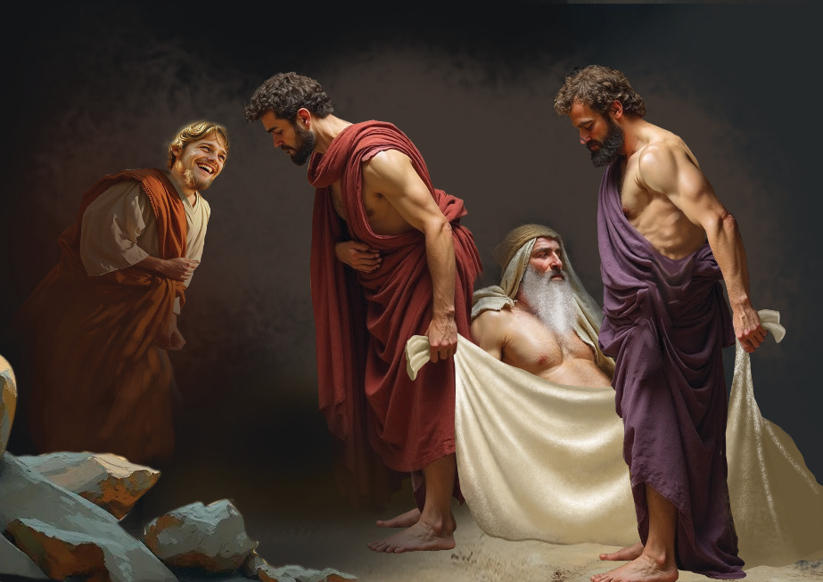

of God’s covenant, emphasizing His faithfulness and mercy. Even amid failures, we see God’s redemptive work continuing, pointing towards a greater hope for humanity.
Noah and alcohol (Genesis 9:21-27)
The event involving Noah and his sons here, reminds us that our actions bear consequences, emphasizing the significance of respect and responsibility. Noah’s sons were Shem, Ham, and Japheth. Ham was the father of Canaan.
Noah the tiller of soil was the first person to plant a vineyard. He drank some of the wine and became drunk. In addition, he lay uncovered in his tent. Ham, the father of Canaan, saw his father naked and told his two brothers outside. But Shem and Japheth took a garment and laid it across their shoulders; then they walked in backward and covered their father’s naked body. Their faces were turned the other way so that they would not see their father naked. Figure 3.12 shows Noah being covered by his sons.

When Noah awoke from his wine and found out what his youngest son had done to him, he said, “Cursed be Canaan! The lowest of slaves will he be to his brothers.” He also said, “Praise be to the LORD, the God of Shem! May Canaan be the slave of Shem. May God extend Japheth’s territory; may Japheth live in the tents of Shem, and may Canaan be the slave of Japheth. After the flood Noah lived 350 years. Noah lived a total of 950 years, and then he died.
The wife of Canaan (Ham) was called Sherah. Noah’s curse had been put on Canaan, not to the culprit Ham. This explains how the Canaanites had been enslaved by the Israelites.